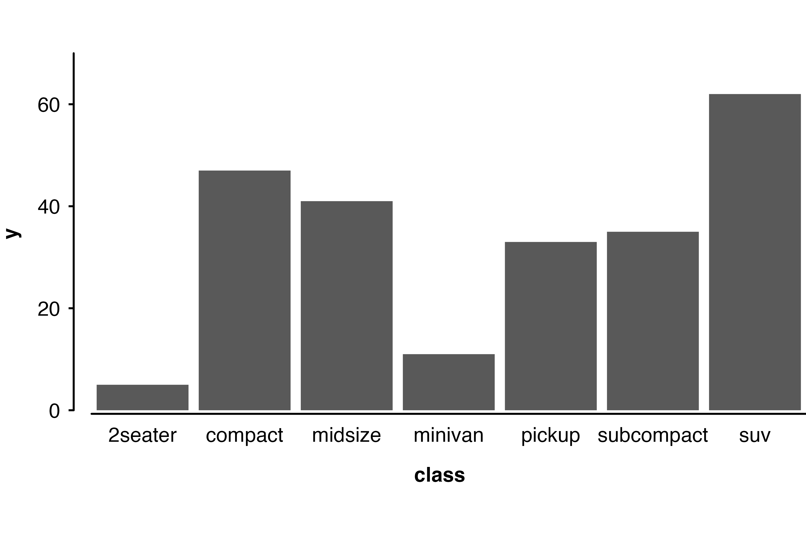

The plot_like_ckb function does three things to a ggplot2 plot:
- applies a CKB theme (i.e. change the overall appearance)
- extends the plotting area and manually adds axis lines (so that you can have a custom sized gap between the plotting area and the axes)
- applies a fixed aspect ratio
Simple examples with a scatter plot
Make a scatter plot with ggplot.
plot <- ggplot(data = mpg, aes(x = displ, y = hwy)) + geom_point(size = 1)
plotApply just a CKB theme and use axis lines.
plot + theme_ckb() + theme(axis.line = element_line())
Or apply the plot_like_ckb function to add separated axis lines and fix the aspect ratio.
plot_like_ckb(plot = plot)Axis limits
Set axis limits.
plot_like_ckb(plot = plot, xlims = c(0, 8), ylims = c(10, 50))
If you do not want a gap between the axes, set gap = c(0, 0).
plot_like_ckb(plot = plot, xlims = c(0, 8), ylims = c(10, 50), gap = c(0, 0))
Aspect ratio
Change the aspect ratio of the plot.
plot_like_ckb(plot = plot, xlims = c(0, 8), ylims = c(10, 50), ratio = 0.3)
Modifying the appearance of the plot
If you wish to override some aspect of the theme applied by plot_like_ckb, then this can be done by adding a theme after the function.
plot_like_ckb(plot = plot, xlims = c(0, 8), ylims = c(10, 50)) +
theme(axis.title = element_text(colour = "red", face = "plain"))
Warning about axis limits
If any data points you are plotting fall outside the axes, then they will still be drawn and may show up in places such as the axes, the legend, the plot title, or the plot margins. There is also no warning if data points fall outside the whole plot area.
So it is best to check that your xlim and ylim values are suitable for your data before using the function.
# The xlim and ylim ranges are too narrow
plot_like_ckb(plot = plot, xlims = c(0, 4), ylims = c(20, 50))Bar chart example
barplot <- ggplot(mpg, aes(class)) + geom_bar()
plot_like_ckb(barplot, xlims = c(0.5, 7.5), ylims = c(0, 70), gap = c(0.025, 0.005), ratio = 0.5) +
theme(axis.ticks.x = element_blank())